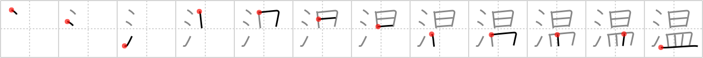

温
← →
warm

Reading:
On-Yomi: オン — Kun-Yomi: あたた.か、あたた.かい、あたた.まる、あたた.める、ぬく
Heisig story:
Water . . . sun . . . dish.
Koohii stories:
1) [CharleyGarrett] 17-1-2007(299): If you leave water out in the sun in a dish, naturally it will get warm.
2) [synewave] 16-4-2007(30): I'm mixing this up with warmth (#1949 暖) far too much. Trying to use mnemonic "Warm Water" - 温泉 （おんせん） obviously relates to water that is warm, from the sun and when you think about it, is kind of like a big dish.
3) [DrJones] 24-2-2008(25): I ate the sun on a plate, and I now feel warm inside. I had to drink water to stop this burning.
4) [cingold] 8-11-2009(13): To warm water, leave it in a dish in the afternoon sun.
5) [kanjihito] 14-3-2011(8): The warm water, warm sun, and warm dish: the three best things to keep you warm.